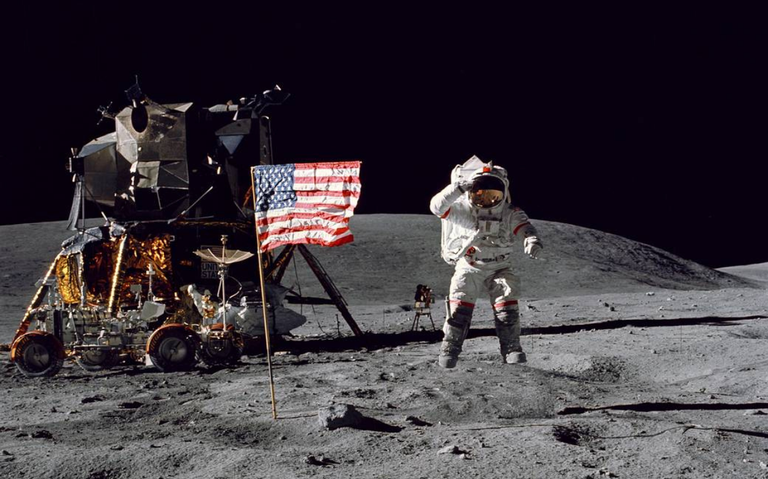

Apollo 11
Durant la realització d'aquest projecte mundialment conegut,
Hamilton va tenir dos grans èxits:
El primer va ser quan els astronautes estaven a punt de començar l'aterratge a la lluna,
que la computadora va mostrar els codis d'error 1201 i 1202. L'equip de
Hamilton ràpidament va saber
identificar que allò significava que la màquina esteia fent neteja
d'allò poc prioritari per a poder centrar tota la seva atenció en el descens
del coet. Amb els errors, Neil Armstrong tenia dubtes
sobre si començar l'allunatge, i Hamilton
li va assegurar que era segur, i així va ser, l'arribada a la lluna va ser exitosa.
L'altre gran èxit té a veure amb la seva filla Lauren, que moltes nits havia d'anar amb
ella a la feina i un cop allà disfrutava de jugar a ser astronauta. Així,
un dia esteien provant un simulador i
es Hardware es va bloquejar perquè la nina va
pitjar el botó P01 (programa de pre-llançament). Davant això, na Margaret es va plantejar que tal
vegada hauria de fer un codi que mostràs un missatge que
digués que aquell botó no s'havia de
pijtar, però tothom li va dir que no era necessari ja que els astronautes estaven entrenats i
sabien que no l'havien de pitjar. No obstant, al següent vol,
l'Apollo 8, un atronauta va
cometre exactament el mateix error que la nina. A partir d'aquell moment, obviament, li varen
deixar posar el missatge que originalment volia posar.
